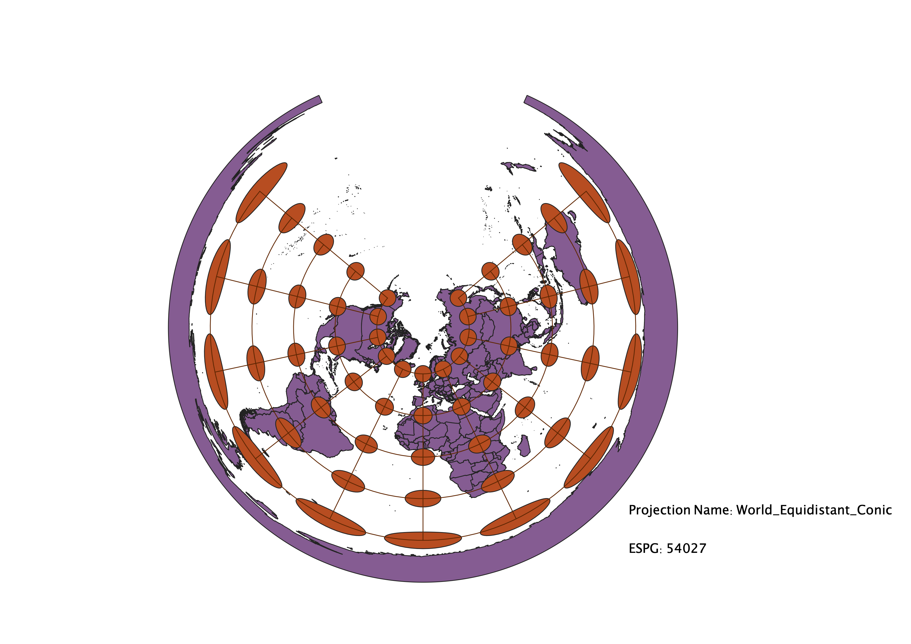

In this project I learned how to display images in different projections
Describe in your own words how you displayed the map in different projections using QGIS
After importing world map data from naturalearth and activiating the indicatrix mapper plugin I was able to use the project proprty(CRS) function is QGIS to explore how different projections affected how a world map is presented. The indicatrix mapper was vital in understanding the distorion in the map as it uses circles and lines to demonstrate levels and types of distortion in different areas of the map. I found that many different projections caused similar distortion. In most of the projections I explored distortion was minimal at the equator and there was almost never any distortion at the intersection of the equator and the Prime Meridian, with the exception of the geocent projections where there was little distortion at the north pole and the highest level of distorion at the equator. The indicatrix mapper allowed me to see that oftentimes areas of land near the poles are stretched horizontically or vertically depending on the projection and the area of these lands is presented as very large compared to their actual size.
WGS84 Projection
There is shape and area distortion towards the poles. The area towards the poles is increased and the land is stretched horizonally.

Aitoff Projection
There is shape and area distortion radiating from the intersection of the Equator and Prime Meridian. Towards the outer edges of the map there is vertical stretching.

Pseudo-Mercator Projection
There is area dostortion but no shape distortion. Towards the poles the area of the land is distorted to seem larger.

Winkel I Projection
Towards the poles area is distorted to seem larger. The area is increasingly stretched going towards the corners of the map.
Equal Area Cylindrical Projection
There is shape distortion that stretches the land towards the poles horizontally.
Equidistant Conic Projection
The area of land towards the south pole is stretched horizontally and distorted to seem larger.

Azimuthal Equidistant Projection
This projection is very similar to the equidistamt conic projection with horizontal stretching near the south pole.

Van der Grinten Projection
The area near the poles is horizontally pinched in towards the prime meridian and there is area distortion to make the pole areas seem larger.

Geocent Projection
This projection seems to only show the northern hemisphere, this projection has less distortion than many others. There is only slight area and shape distortion near the equator showing the land as stretched horizontally.

Data used for this project
Download Natrual Earth 1:10m Cultural Vector